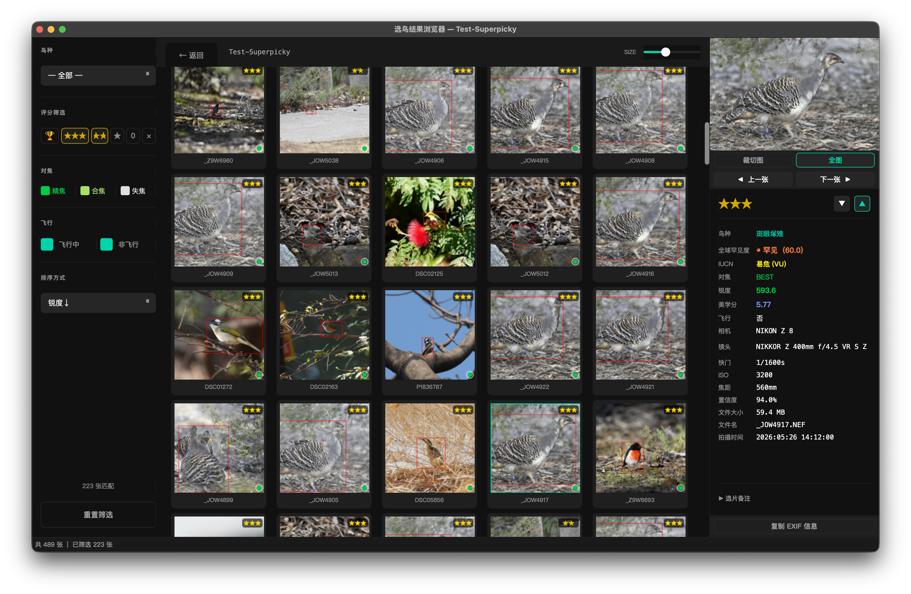

三栏布局让筛选、浏览与详情一目了然；全屏、对比、右键菜单覆盖从审阅到删除的完整工作流。
选鸟完成后，点击完成摘要页的「前往结果浏览器」按钮，即可进入结果浏览器。 界面采用三栏布局：左侧筛选、中央浏览、右侧详情，无需切换页面，一屏完成全部审阅工作。
右侧详情面板不只是只读展示——可以在面板中直接修改当前照片的星级， 修改结果会实时通过 ExifTool 写回 EXIF 元数据并同步更新数据库，无需单独保存。 详情面板各字段含义请参见第 05 章 5.5。

左侧筛选面板提供多维度组合筛选，帮助你快速定位目标照片。
评分筛选（可多选）
| 按钮 | 筛选范围 |
|---|---|
| Pick | 仅显示带 Pick 精选标记的照片（3★ 中的顶尖精选） |
| ★★★ | 3 星优选 |
| ★★ | 2 星良好 |
| ★ | 1 星普通 |
| 0 | 0 星放弃 |
| × | 无鸟 / 识别失败 |
默认勾选 ★★★ + ★★，打开浏览器即直接看到值得保留的照片，无需手动调整。 各评分等级的含义详见第 05 章 5.1， Pick 精选标记的计算规则详见第 05 章 5.2。
排序方式
| 选项 | 说明 |
|---|---|
| 罕见度↓（默认） | 罕见度指数越高的照片排越前，最稀有的鸟第一眼就能看到 |
| 文件名 | 按原始文件名字母 / 数字顺序排列，适合按拍摄时序浏览 |
| 锐度↓ | 最清晰的照片排最前，适合快速找到技术最佳的那张 |
| 美学↓ | 美学构图分最高的排最前，适合优先挑选发布用图 |
罕见度指数的计算方式与五级分级含义请参见第 06 章。
附加筛选
双击缩略图进入全屏查看模式。图片默认以适应窗口（Fit）模式显示，完整呈现全图。
鼠标与触控操作
| 操作 | 效果 |
|---|---|
| 单击（Fit 模式） | 以鼠标位置为中心，放大至 100% 实际像素 |
| 单击（缩放模式） | 恢复 Fit 全图显示 |
| 拖拽（缩放模式） | 平移图像，查看局部细节 |
| 滚轮 | 以鼠标为中心连续缩放，范围 10%–500% |
| 双指捏合（macOS 触控板） | 捏合缩放，与滚轮等效 |
缩放时屏幕右下角会短暂显示当前缩放比例（如 128%），1.5 秒后自动隐藏。
键盘快捷键
| 按键 | 功能 |
|---|---|
| ← / ↑ | 切换到上一张照片 |
| → / ↓ | 切换到下一张照片 |
| Z | 切换 Fit 全图 ↔ 100% 实际像素 |
| F | 切换焦点叠加层显示 / 隐藏 |
| Delete / X | 删除当前照片（移至系统回收站，需确认） |
| Escape | 返回缩略图网格 |
按 F 可在全屏模式下显示 / 隐藏焦点叠加层——叠加层用颜色标出对焦区域， 帮助快速判断哪张连拍的眼睛最实。
当需要在两张照片之间做最终取舍时，可使用对比模式将它们并排显示， 适合从连拍中挑出构图与对焦均最佳的那一张。
「对比」按钮只在恰好选中 2 张时出现；选中 1 张或 3 张以上时按钮自动隐藏。 如果选错了，再次点击已选中的缩略图可取消选中。
在缩略图网格或全屏模式下，右键单击照片弹出快捷菜单：
| 菜单项 | 功能 |
|---|---|
| 在 Finder 中显示（macOS） 在资源管理器中显示（Windows） |
打开文件所在文件夹并高亮选中该文件，方便直接操作原文件 |
| 用 [应用程序] 打开 | 调用外部程序（如 Lightroom、Photoshop）打开当前照片 |
| 复制路径 | 将文件完整路径复制到剪贴板 |
| 删除 | 将照片移至系统回收站（不是永久删除） |
关于删除操作
删除操作作用于整理后目录中的文件。 如果你的工作流是先整理、再浏览，请在删除前确认原始文件已备份， 以免误删无法从回收站恢复的 RAW 文件。